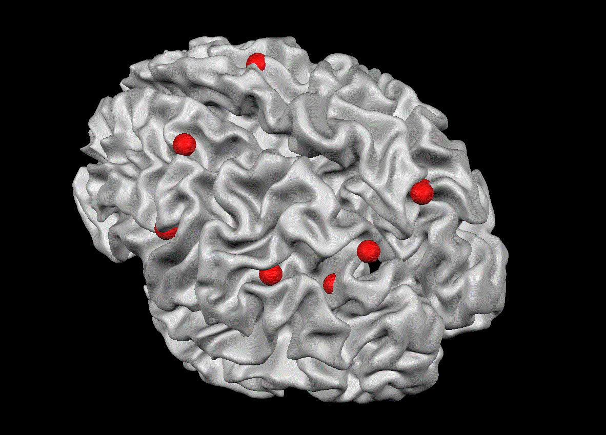

Priya B. Kalra
About Me
Research
Teaching
Data Science
Other
Gallery of cool brain images
Made by Me
Images from Flux 2019 poster
Poster
 This image shows the nodes we selected for the functional connectivity network analysis as red spheres in a 3d brain. Made with
Brain Voyager
.
These images show the functional connectivity among the selected nodes for second graders(left) and fifth graders (right). I did the functional connectivty analysis in
AFNI
, then made the figure in
MatLab
.
Preprints
Preprints
Preprints
© Untitled. All rights reserved. | Design:
HTML5 UP